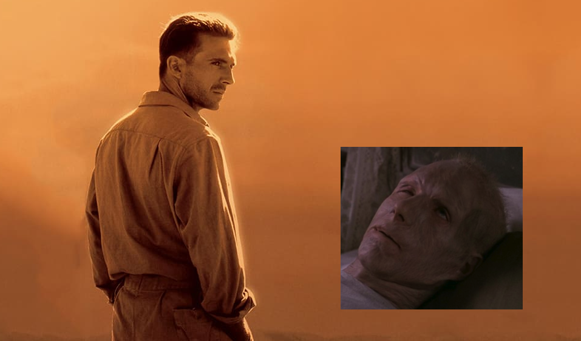
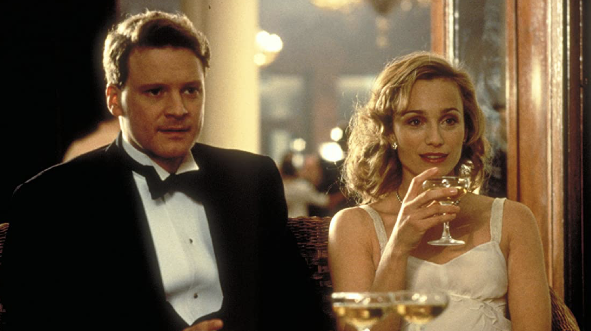
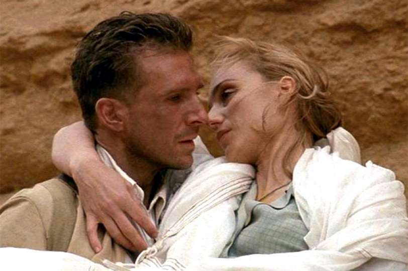
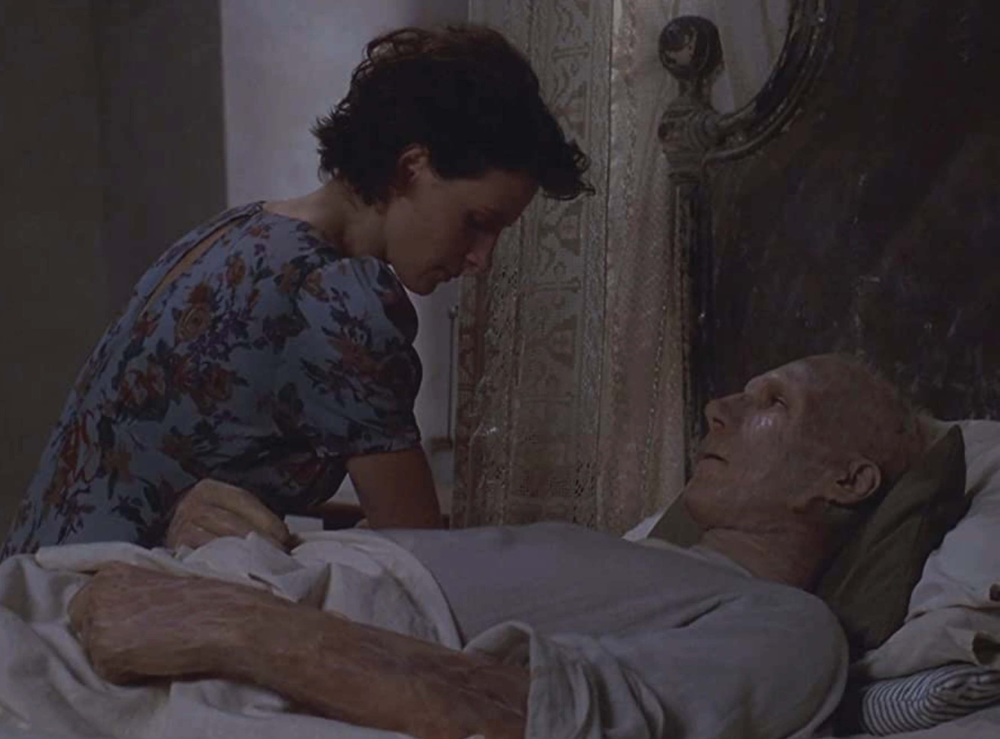
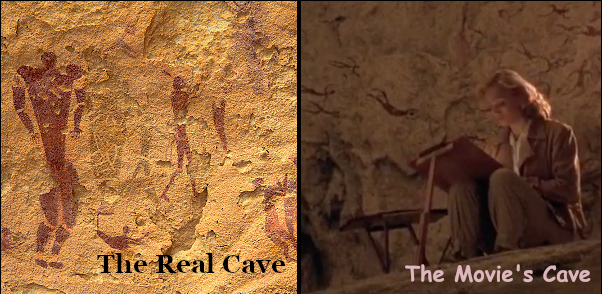

English Patient
A Film Review

“The English Patient” is a mystery wrapped in four
interlocking love stories. Screenwriter and director,
Anthony Minghella retells the story of a Hungarian aristocrat
Lazlo Almàsy in the period around WWII. Almàsy was a
cartographer operating out of Cairo who got involved in the North
African fighting between the British and the Germans.
Minghella's story is based on a novel by
Michael Ondaatje. Ondaatje was born in what was
then Ceylon but lives in Canada and writes in English.
Although Minghella kept Ondaatje's basic theme there are
differences.
For example Ondaatje's ending takes a jab at Anglo-Saxon
racism by having a character say “they would never have
dropped such a bomb on a white nation” when speaking of the
American bombing of Hiroshima whereas Minghalla, a Brit,
includes no mention of Hiroshima in his movie.
Minghella's story cuts between two segments of Almàsy's
life: one in North Africa, where he is a healthy multilingual
cartographer, and the other segment in Italy, where he is
badly burned and anonymously known as “The English
Patient”.
The photography and film editing are superb. North Africa
is sunny and magnificent. Italy is blue-tinged and instantly
recognizable as not-Africa. Transitions between the two
segments are both creative and nonobtrusive.
Although the movie begins in Africa, the African segment
is a flashback. As the movie progresses the various flashbacks
become more than just flashbacks. They become part of the
English Patient's defense against charges that he is
responsible for the death and suffering of lots of people.
Almàsy defense is both convincing and ambiguous. If you do
something that indirectly and unintentionally causes death,
what is your degree of responsibility? What if your action
merely causes different people to die?
There are five interlocking relationships in this movie.
The first consists of a group of cartographers operating
out of Cairo, Egypt. This a multinational group of friends.
Their ethnic diversity is emphasized in a scene in which they
amuse themselves by singing a verse of "Yes, We Have No
Bananas" in various languages.

The second relationship consists of a married couple, the
Cliftons, who have known each other since childhood. Geoffrey
Clifton's pain at his wife's infidelity causes a major event
in the movie's plot.

The third is a romantic relationship between Almàsy and Katherine
Clifton. This is the primary love story of the film.
At one point Katherine
says "In Egypt I am a different wife." This is significant
both within the film and as an explanation for infidelity.
Within the film, Almàsy fantasizes that Katherine is actually
his wife. He draws upon this fantasy when he
convinces a British officer in Italy that he is English.
In the October 2017 Atlantic magazine, family therapist
Esther Perel writes that infidelity is often caused, not by
bad marriages, but because marriage does not bring out all
aspects of a personality. Relationships outside a marriage allow
one to be a different person.

The fourth relationship is between Almàsy and Hana,
a nurse who takes care of him in Italy. This is a platonic
romance.
The fifth relationship is a romance between
Hana and Kip. Kip is a Sikh whose job is to find and defuse
explosives. He finds one in a piano Hana is starting to play.
Taken together these relationships give us three messages:
-
love is not exclusive to particular individuals or nationalities,
- personal relationships are much more
important than cultural or national differences, and
- actions have consequences.
Other relationships in the film reinforce these same messages:
Arab nomads save Almàsy's life for no other reason` than that
he is a fellow human in need. Kip is very close to his
coworker sergeant although the sergeant is from a very
different cultural background.
But that's not all the film offers. You get to see biplanes flying over the desert.
and a cave with prehistoric drawings of swimmers

This cave actually exists in the Libyan desert and was
discovered by the real life Almàsy.
To summarize: “The English Patient” is well-made film
which delivers the above three messages in an easily
digestible and visually appealing form.